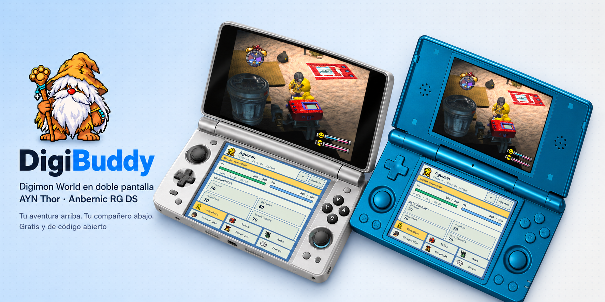
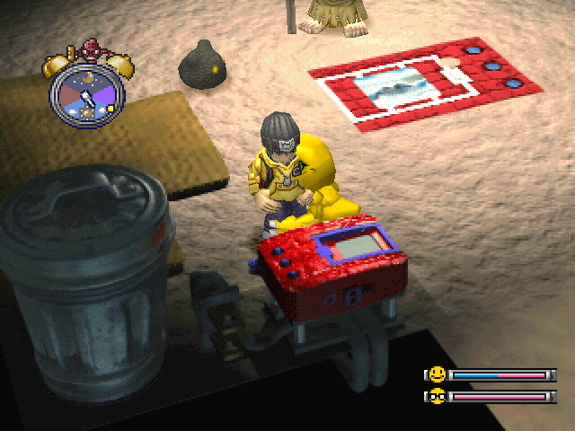
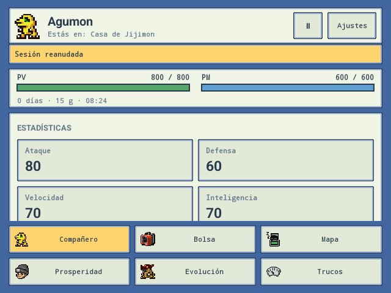

Conoce a tu compañero
Consulta sus estadísticas y las rutas de evolución. Confirma las acciones antes de aplicarlas.
Redescubre Digimon World de PSX con el juego en la pantalla superior y tu compañero, bolsa, mapa y evoluciones al alcance de la mano.
AYN Thor · Anbernic RG DS

Consulta sus estadísticas y las rutas de evolución. Confirma las acciones antes de aplicarlas.
Lee los efectos de tus objetos y úsalos mediante los menús originales del juego.
Mapa con enemigos, salidas, WC y objetos. Pistas de reclutamiento en Prosperidad para hacer crecer el pueblo.
Español o English, botones reasignables, ajustes gráficos, estados de guardado y descarga de actualizaciones desde la app.
Capturas de DigiBuddy en RG DS. La interfaz puede variar según la versión.


La BIOS y el juego no están incluidos. Se importan desde tus archivos en el asistente inicial.
Digimon World USA (SLUS-01032) y la edición japonesa (SLPS-01797) con el parche español de referencia. Otras ediciones pueden arrancar en el emulador, pero necesitan un perfil compatible para el panel. Consulta el README para identificar la edición.
Las actualizaciones con la firma oficial conservan los datos. Guarda antes de instalar y no desinstales la app. Los estados deben coincidir con el juego y núcleo; cambiar de edición no transfiere la partida automáticamente.